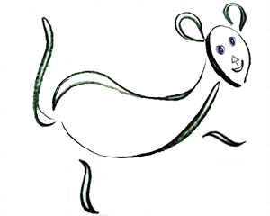

This project is inspired by rats found in NYC subways. When I started riding subways I was scared of rats, so I made up funny stories about rats I saw. My project will incorporate smy stories, illustrations, and web development skills.